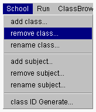
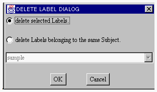
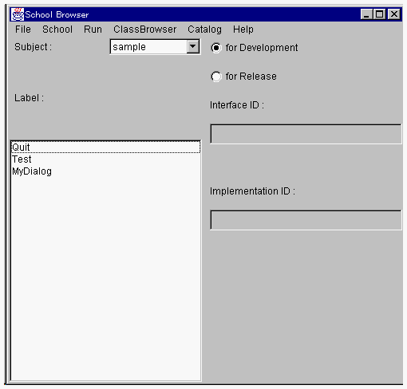
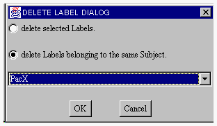

サブジェクトからクラスを削除する
サブジェクトを構成するクラスを削除する方法として、個別クラスの削除および全クラス削除の2種類を用意しています。サブジェクトを削除するためにはそれが管理するすべてのクラスが削除されていなくてはいけません。サブジェクト削除を行う場合には、全クラスの削除が便利です。

サブジェクトに属する1つのクラスを削除する
- １．スクールブラウザの左側に存在するLabels:リストから削除するクラスを選択してください。

２．そして、School メニューから remove class メニュー項目を選択します。

- クラスを削除するためのダイアログが開かれます。

３．ラジオボタンの選択を delete selected Labels. にしてOKボタンをクリックすると、スクールブラウザの左のリストで選択されていたクラス情報が削除されます。

サブジェクトに属するすべてのクラスを削除する
1．スクールブラウザのSubject:リストメニューから、クラス識別子を付与するサブジェクトを選択してください。
２．スクールブラウザの School メニューから remove class メニュー項目を選択します。
- クラス識別子を削除するためのダイアログが開かれます。

３．ラジオボタンの選択を delete Labels belonging to the same Subject. にしてOKボタンをクリックすると、メニューで選択したサブジェクトの全クラスが削除されます。
(c) 1996-1998 IPA, ETL, AT21, FSIABC, FXIS,
InArc, MRI, NUL, SBC, Sharp, TEC, TIS. All rights reserved.